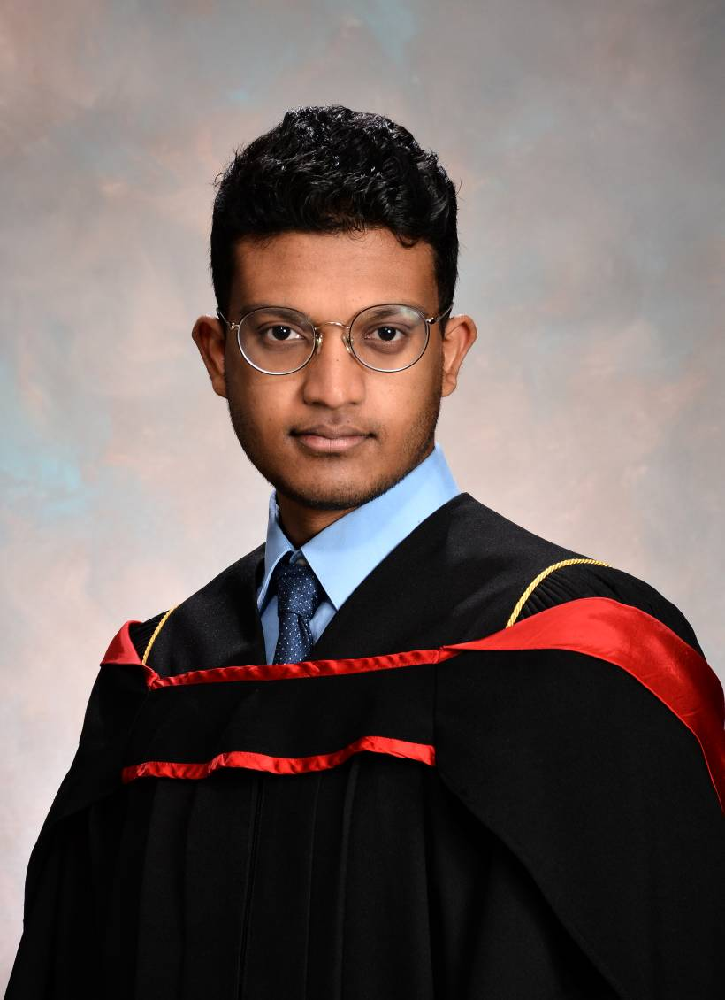

About Me

Professional Summary
I am an engineering professional with 2 years of project management experience. Currently, I am advancing my expertise by studying Industrial Engineering. My passion lies at the intersection of traditional industry and cutting-edge technology.
Outside of work I’m usually reading, learning something new, or staying active. I play padel and volleyball, and I’ll go bouldering now and then.